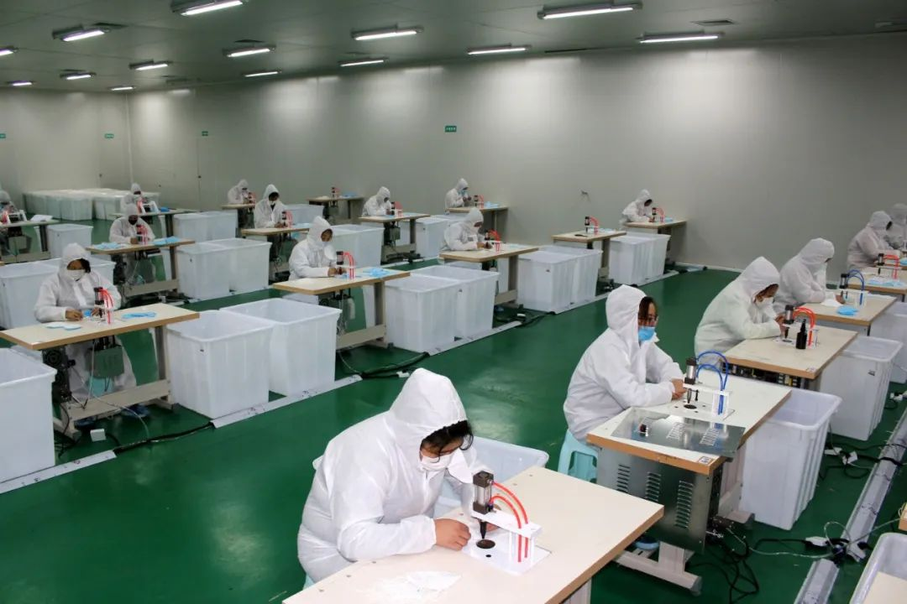
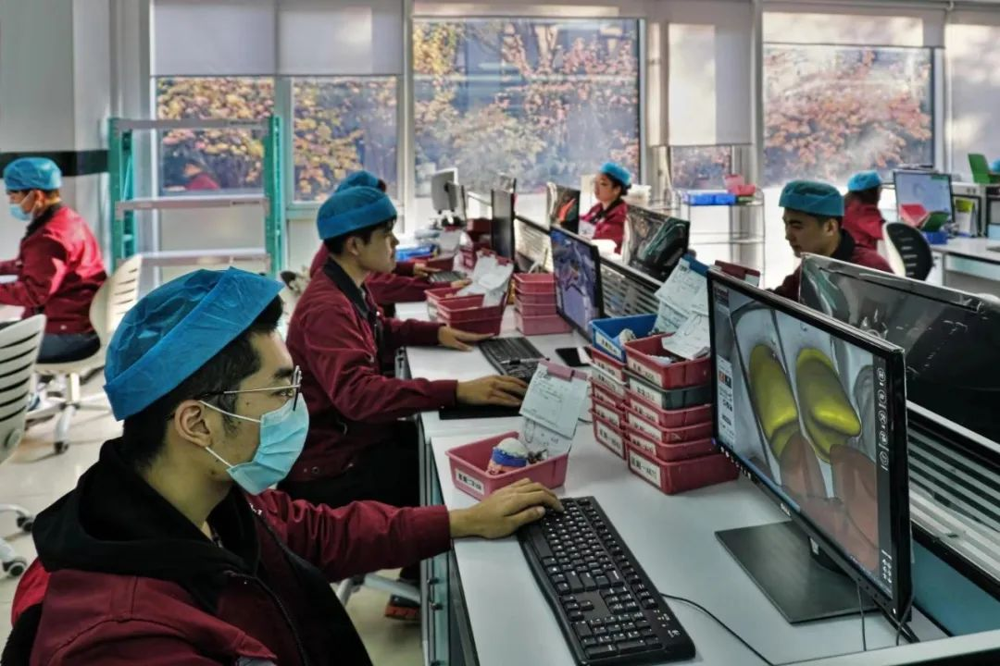
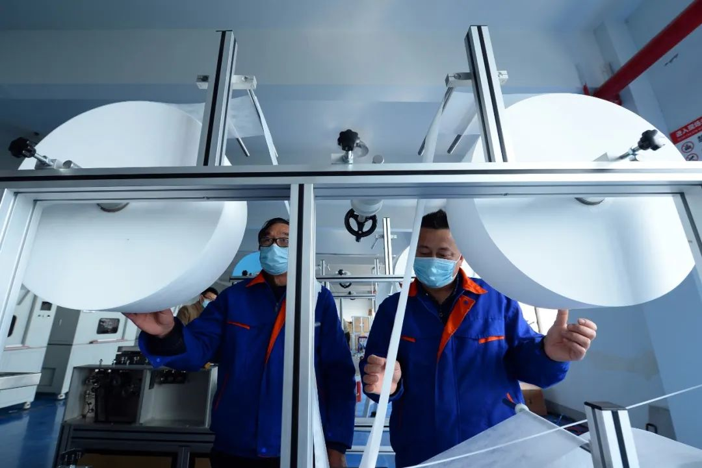

口罩总动员
原文链接 备份链接 👆本号引起极度舒适，建议星标一下 口罩转产背后的中国制造业 作者 | 罗立璇 设计 | 范晓雯 对于口罩的渴望迅速扩散到了大江南北。疫情影响下，口罩已经成为了生活必需品。尽管大部分民众已经尽量减少出门的频率，但只要需要 …
 几乎无人愿意涉足成本高企的上游原材料市场
几乎无人愿意涉足成本高企的上游原材料市场
都挤在产业链下游“搏命”


2020年2月28日，工人们在四川祥和茂制衣口罩生产线上忙着生产口罩，保障市场供给。 中新社发 李建明 摄
新型冠状病毒肺炎疫情仍在持续。口罩、防护服乃至额温枪，原本都是不起眼的小产业，面对突如其来的疫情，突然被推到了事关国计民生的风口浪尖上。
在行政命令和经济效益的双重刺激下，各路人马纷纷入局，大显神通。但面对庞大的需求缺口，仍呈供不应求之势。
原因究竟何在？
需求
三天前，口腔医疗设备代理商李莉在朋友圈里发出了一张图片：霍尼韦尔头戴式口罩，一大盒25只装，售价875元。
但很快，她就把这条朋友圈删除了。
“不管你卖多少价，别人都会觉得你在发国难财。”李莉说，“反正一共也没多少钱，算了，想想没有必要。”
疫情发生前，3M、霍尼韦尔的口罩，单片售价仅有五元人民币左右。普通的一次性外科口罩更便宜，单片折算下来仅有四角到一元。随着疫情发展，价格开始飙升，都出现了五到十倍的涨幅。
李莉能拿到口罩，也得益于职业便利：口腔医疗行业对口罩历来有需求。李莉之前的老东家在德国有一条小型口罩生产线，专供本行业使用。因为产量实在不起眼，平常都没人注意。但随着新冠疫情的发展，突然成了香饽饽，订单如雪片般飞来。
李莉告诉中国新闻周刊，疫情之前，相对国内，欧美生产的口罩因为价格太高，没有任何竞争力可言。这一次情况彻底翻转了过来。“国外的华人们都在各显神通，能搞多少搞多少。”因为订单太多，实在生产不过来，很多海外生产线都停止了接单。
除了口罩，防护服也成了紧俏产品。
2月4日，北京赢冠口腔医疗科技股份有限公司（以下简称“赢冠科技”）开始复工，调整设备，于2月7日搭建完成了一个防护服生产车间。
原本，北京市内有资质的防护服生产企业只有位于平谷区的邦维高科一家。但随着疫情发展，防护服供应吃紧。国家药监部门开放了在疫情期间医疗器械应急备案的政策。原本主营业务为义齿制造的赢冠科技就是首轮获批的企业之一。
赢冠科技董事长郭大鹏向中国新闻周刊透露，目前，公司的防护服生产仍不稳定，取决于原材料的供应情况，日产量在100-300件之间浮动。
放眼全国，赢冠科技的“转型”只是一个缩影。随着疫情的发展，五菱、比亚迪、富士康等企业都纷纷入局生产口罩。五菱还打出了“人民需要什么，五菱就造什么”的标语，在网络上收获了一波好感。
大中小型民企接连入场，让人们一阵欢呼。但物资短缺的问题，真的能够就此迎刃而解吗？
瓶颈
根据业内人士介绍，防护服和口罩，生产各有不同的难处。
防护服对生产场地有严格要求，一般要求在10万级洁净车间生产。如果服装企业临时新建洁净厂房，投入不小，时间上也未必来得及。这个门槛导致了医用防护服生产企业的稀缺。所以常见的解决之道是，直接借用药企的车间改造成医用防护服生产车间。这也是主营业务为义齿的赢冠科技能够入局，而许多中小纺织企业却难有用武之地的原因所在。

赢冠科技实验室。 图/受访者供图
此外，和传统服装制造相似，防护服生产也属于人力密集型工种，自动化水平较低，涉及到制版、裁剪、缝纫、封边、压条、上拉链等一系列复杂工序。衣服制成后，还需要经过24小时的辐照灭菌流程。赢冠科技目前共有40名工人，满负荷运作下，平均日产量也仅在两百套左右。
但在蔓延的疫情下，随着封城封路政策的实施，企业招工成了难题。郭大鹏告诉中国新闻周刊，赢冠科技的员工虽然了解医疗生产标准，却不会制成衣。因此公司只好开出600元一天的价格，才找来了十几个裁缝，和员工们形成技术互补。早在2月9日，邦维高科为了招徕熟练工，也开出了高价招聘的启事。

邦维高科招聘启事。图/国际人才招聘平台公众号
但这些问题都是技术问题，本质上是可解的。随着各地逐步开始复工，情况立刻得到了改善。根据前不久国新办发布会公布的数据，1月28日，全国医用防护服日产量还不到1万套，生产企业不到20家。现在扩产转产达到了50多家，还有近百家已经陆续获得资质。
根据估算，目前医用防护服保供湖北的数量已经超过了200多万件，全国日产量已经达到了20多万套。足以满足需求。
口罩则完全是另一种光景。
制约口罩产量的瓶颈不在于技术和人力。深圳医疗器械行业协会（以下简称“深圳医协”）副秘书长焦仪给了中国新闻周刊一组数据：市面上主流的口罩机，一小时的节拍是6000只，旧机型一小时的节拍是3600-4000只。也就是说，倘若不计算灭菌和解析期，一个口罩机平均一小时便能量产5000只口罩。自动化程度很高。
但口罩生产，难在关键原材料之一的熔喷布产量受限。熔喷布的主要原料为聚丙烯，是一种纤维直径在2微米左右的超细静电纤维布，可有效捕捉粉尘。含有病毒的飞沫靠近熔喷布后，会被静电吸附在表面，无法透过。
普通的医用外科口罩，一个要使用一层熔喷布。至于更高规格的N95，一个口罩要用掉至少3层熔喷布。因此是生产过滤功能口罩的必要原料。
焦仪向中国新闻周刊介绍，熔喷布的主要材料是聚丙烯材料做成的高熔指纤维。而一吨高熔指纤维能够生产成品熔喷布 900公斤，产率在90%左右。金联创数据显示，2019年高熔指纤维全年产量为88万吨，即使全部换算成熔喷布，也才79.2万吨，远远小于防疫工作中口罩产能所需量。
近年来，熔喷布的市场一直处于稳定水平，只有在面对例如SARS、埃博拉、禽流感暴发等突发公共卫生安全事件时，才会出现短暂爆发。企业趋利，市场容量有限，平时自然不会增产。
据了解，全国能够生产符合医用熔喷布BFE95以上的企业大约有100家，日产量约100吨。
根据深圳医协的调研，减去实际生产中的损耗，一吨熔喷布大概能做90万-100万只医用外科口罩。100吨，也就是全国一天的医用熔喷布总产量，能做9千万只口罩。
根据口罩机的生产速率反推可得，100吨熔喷布，仅可以供750台口罩机工作24小时。但根据《中国企业家杂志》早先一篇报道，仅盈合科技一家口罩机生产厂商（也是临时转型，其原本主营业务为锂电池制造装备）的接单量就已经达到了1700台。上游原材料不足，下游设备供应却泛滥，产业链难免发生扭曲。

2020年2月27日，江苏省苏州太仓市双凤镇一家汽车配件模具研发企业人员对即将出厂的本体口罩机生产设备进行出厂前验收。该公司2月初以来根据市场需求进行研发调整，研发设计日生产能力达14万只的本体口罩机。 中新社发 钟鑫旺 摄
一言以蔽之，医用熔喷布的现有产量，远远满足不了口罩生产设备的产能。
那么，既然需求存在，有利可图，为什么企业不进军上游，直接参与熔喷布制造，都在一窝蜂地投资口罩生产线呢？
首先是经济因素。相对于搭建口罩的生产线，参与制造熔喷布所需支付的代价实在太大。生产熔喷布的设备，国产价格大约在500万元人民币左右，进口设备则在1000万元人民币以上。
与之相对的是，市面上常见的平面一拖二口罩生产线，即便价格近期有所上涨，但装配下来也仅需不到60万元。考虑到疫情很可能在夏季到来时结束，中小企业自然更有动力进入下游市场“搏一搏”，而不愿涉足成本高企的上游原材料市场。
其次是学习成本。设备购买、入厂、调试、培训的一系列过程都需要时间，长则三个月，短也要一个月。而业内共识是，一个月后，疫情很可能已经过去。这直接导致，即便是不以盈利为目的的国企央企也无法下定决心跑步入局。
乱象
熙熙攘攘，皆为利往。供需矛盾下，乱象自显。
李莉告诉中国新闻周刊，目前市场上口罩货源极为稀缺，就连她这种专业从事医疗器械代理的员工只能零散拿到几盒。“也是朋友给的一些库底。”
李莉的朋友圈里也有那种号称“一万个起订”的微商。“其实他也没有货源，也是找人拼单。拼成了拿的残次品，没拼成就直接砍单。”李莉说，“你觉得反正退了钱，你没什么损失，其实相当于帮别人做了老鼠仓。”
不久前大火的一篇自媒体稿件《倒爷，骗子，庄家：我在额温计百亿黑市里的惊心24小时》也揭露出了额温枪市场乱象的冰山一角——大部分都是以捐赠为名倒买倒卖额温枪，市场内流动的资金数以亿计，唯独没几个人真正能见到现货。
熔喷布自然也不能免俗。焦仪向中国新闻周刊透露，早在1月初，深圳一家企业，就开始大量囤积熔喷布。随着疫情发展，熔喷布价格很快节节高升，原价每吨价格在18000、19000元左右的熔喷布，逐渐加码到一吨十万，再到二十万。尽管价格高企，但许多被政府征用的口罩厂为了完成硬性任务，也只好不计成本地购买。
飙升的成本，直接反映到终端消费者的价格上。“摊下来，每个至少要涨一块钱。”
上游的原材料不足，但中小企业却还是一窝蜂涌进下游，开始大量铺设生产线，对此趋势，焦仪表示担忧：“物料不够，保证不了生产，（这些设备）就相当于一堆废铁。”
至于早先在网络爆红的五菱、比亚迪、富士康这类大型企业，不仅现金储备能力强，就算没有疫情，员工日常也有对口罩的需求。搭建口罩生产线，无非相当于外购转自造。反映到财务报表上，原本的费用项还可以计为资产项，成本反而降低了。
为了缓和资源错配的状况，早在疫情开始之初，深圳医疗器械行业协会一直呼吁实施分级接单制度。所谓分级接单制度，指的是生产设备、原材料应按照相关合同和订单，优先供给有资质的医疗器械企业，以遏制中间商囤积居奇的行为。
或许是业内人士的呼吁起到了效果。2月21日，国务院客户端小程序上线了“重点医疗防控物资生产工序对接专区”，原材料的供求双方，都可以在专区内上报供求信息并搜索匹配。
为了遏制行业过快跃进，一些地方政府也逐步收紧了医疗物资的快速审批政策。2月25日，广东省药品监督管理局办公室发文，将新冠肺炎疫情防控应急响应级别由重大突发公共卫生事件一级响应已调整为二级响应，并且宣布，自3月1日起，各市停止全省疫情防控所需第二类医疗器械应急备案工作。而对于已经备案的企业，也要加强监督检查，原材料性能不达标的，不得继续生产、销售。
未来与反思
在不少人的观念中，医疗器械行业在这一轮疫情中赚的盆满钵满，但焦仪认为，这种猜测并不全面。
首先，尽管部分医疗器械，如口罩、防护服、诊断试剂等防疫产品的产量出现了爆发式增长，但相应地，春节期间的用工成本，以及原材料成本的也都同步发生了大幅上涨；
其次，医院将人力主要集中在对新冠肺炎的防护与救治，势必忽略其他方面。部分与防疫无关的药品和医疗器械可能暂停购入，公立医院的集中采购可能也会暂缓；
最后，医疗器械外贸出口受不可抗力停摆。以上种种因素，都抵消了防疫产品销售带来的利好。
郭大鹏也向中国新闻周刊表示，赢冠科技光是搭建生产设备、购买原材料就已经投入了将近三百万人民币，而且生产出的头几批防护服都是直接捐赠给了北京卫计委，再由后者统一调拨给各家医院。“我们其实从一开始也没指望靠这个赚钱。”郭大鹏坦言。
焦仪认为，从长远来考量，新冠疫情对医疗器械行业来说既是考验，也是改变的机会。
多年来，医疗器械生产的特点是小批量，多品种，因此自动化水平一直处于低端，更是远远落后于手机、汽车制造、快消品等产业。正常时期下，医疗器械企业的产能，严重受制于劳动力数量和人员技术水平的高低。
但当真正的疫情到来之时，人们发现，封城封路政策限制了人员流动，劳动力供应不足的问题开始全国各地暴露。因此在焦仪看来，医疗器械的智能制造、自动化生产势在必行。
“国家应该重视医疗器械这个小行业，对于产业创新、产品研发、新技术应用、智能生产等方面的日常支持应该进一步加大。”
此外，目前来看，虽然国内的疫情得到了有效控制，但国际上却不容乐观。如伊朗、日本、韩国、意大利等国，都出现了新冠肺炎迅速扩散的苗头。倘若东京奥运会如期举办，全球对防疫物资的需求只会持续加大。
焦仪认为，考虑到中国在抗击新冠肺炎方面累积的经验，接下来，中国的防疫物资的供应除了满足国内的需求外，很可能会接到大量的国际订单。这对于企业来讲，同样既是考验，也是机会。
但医疗器械行业的特殊之处在于，法律和制度门槛较高。出口境外的医疗器械，取得出口资质和进口国产品认证都需要一定时间。即便疫情之下，特事特办，但其中也必然会涉及诸多问题。“这些工作依然需要我们的政府来支持协助。”焦仪说。
应受访者要求，李莉为化名
值班编辑：冯超
推荐阅读
▼


原文链接 备份链接 👆本号引起极度舒适，建议星标一下 口罩转产背后的中国制造业 作者 | 罗立璇 设计 | 范晓雯 对于口罩的渴望迅速扩散到了大江南北。疫情影响下，口罩已经成为了生活必需品。尽管大部分民众已经尽量减少出门的频率，但只要需要 …
原文链接 备份链接 澎湃新闻记者 李思文 实习生 夏梦洁 “熔喷布（价格）涨了10倍，耳带（价格）涨了5倍多。” 近日，浙江一家医用卫生产品生产企业的负责人如此告诉澎湃新闻，企业在满负荷生产的同时，也承担着成本翻倍的压力。其中，熔喷布作为 …
原文链接 备份链接 图片来源：视觉中国 记者：柯晓斌 编辑：文姝琪 “ 随着疫情缓解，口罩价格开始回落。 ” 随着复工潮来临，“买不到口罩”还是上班族的难题。 在天猫、京东、苏宁等电商平台上，消费者仍能在手速快或运气好的情况下，抢到几个由 …
原文链接 备份链接 图片来源：视觉中国 记者：彭强 “ 熔喷布设备供应周期更长，跨界生产的难度、要求和风险也更大。 ” “除了熔喷布，其他的都好说。”在某口罩货源共享交流群里，一位生产商这样表示。 该群里汇集了百余位口罩产业上下游的相关厂 …
原文链接 备份链接 澎湃新闻记者 邹娟 2月14日，生产豆腐起家的清美集团，辟出两条生产线，生产口罩。日产20万只，除了自用，其他都供政府调配。 2月13日，上汽通用五菱生产的第一批口罩批量出货。从想法提出到第一批口罩下线，仅用时3天。 …